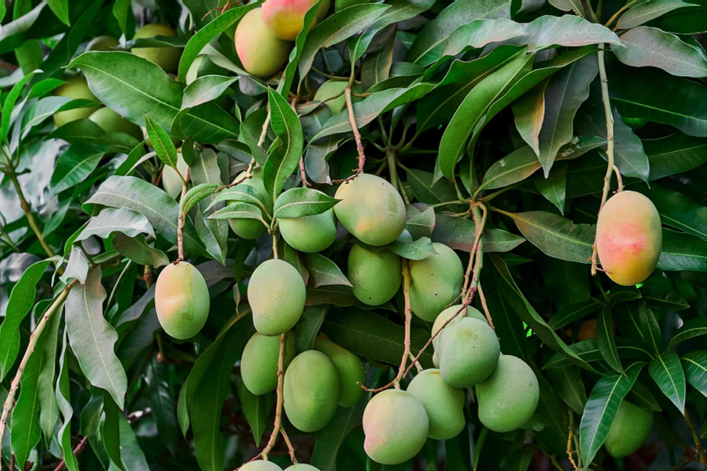

Overview of Aamra
Basonym of Drug: Aamra
Main Synonym: Rasala, Chuta, Sahakara, Pikavallabha
Regional Name
- Bengali: Aam
- Gujarati: Aambo, Keri
- Hindi: Aam
- Kannada: Amba, Ambha
- Telugu: Mamidichhetu
- Tamil: Mangay, Mamar
Botanical Information
Botanical Name: Mangifera indica Linn
Family: Anacardiaceae
Classification (Gana):
- Acharya Charaka: Hridya, Chardinigrahan, Purishsamgrahaniya, and Mutrasamgrahaniya Mahakashaya
- Acharya Shusruta: Nyagrodhadi Gana
- Acharya Vagbhatta: Nyagrodhadi Gana
External Morphology
15-20 meter medium to high tree
Useful Parts
Fruit, Seed Pulp, Leaves, Bark
Important Phytoconstituents
- Vitamin A
- Vitamin B
- Citric Acid
- Galic Acid
Rasa Panchak
- Rasa: Madhur, Amla, Kahsay
- Guna: Laghu, Ruksha (Seed Pulp), Snigdha (Fruit)
- Virya: Shita
- Vipaka: Katu/ Amla
Action
Vata Shaman (Ripen Fruit), Kapha-Pitta Hara (Other Parts)
Therapeutic Indication
- Fruit - Deepen (Increase Appetite), Chardihara (Useful in Vomiting)
- Seed Pulp – Atisara (In Diarrhea), Pradara (In Lucorrhea), Prameha (Diabetes)
Therapeutic Uses
- Atisara - A paste of tender leaves of Aamra with Tandulodaka is useful in diarrhea.
- Raktapitta - Seed pulp juice in both nostrils as Nasya treatment.
- Aruchi - Juice of ripen/unripen fruit is useful in anorexia.
- Rata Arsha - Seed pulp powder twice a day in bleeding piles.
Dose
- Seed Pulp: 1 to 1.5 gm
- Bark: 3-6 gm
Formulations
- Bruhat Gangadhar Churna
- Nyagrodhadi Churna
- Patrangasava
- Katak Khadiradi Kashaya
Adverse Effect
Not Known